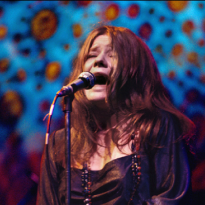

Janis Lyn Joplin foi uma cantora e compositora norte-americana. Considerada a “Rainha do Rock and Roll”, “a maior cantora de rock dos anos 60” e "a maior cantora de blues e soul da sua geração".
“Algumas vezes a música é a única forma de melhorar a vida!”
Influenciada por grandes nomes do jazz e do blues, como Aretha Franklin, Billie Holiday, Etta James, Big Mama Thornton, Odetta, Leadbelly e Bessie Smith, Janis fez de sua voz, alta, rouca, terrosa e explosiva a sua característica mais marcante, tornando-se um dos ícones do rock psicodélico dos anos 1960.
Conquistou sua fama no fim dos anos 1960 como vocalista da Big Brother and the Holding Company e, posteriormente, como cantora solo, acompanhada de suas bandas de suporte: a Kozmic Blues e a Full Tilt Boogie. A revista Rolling Stone a considerou entre os 100 maiores artistas de todos os tempos. Faleceu em 1970 devido a uma overdose de heroína, deixando para os fãs apenas quatro álbuns: Big Brother and the Holding Company (1967), Cheap Thrills (1968), I got Dem Ol’ Kozmic Blues Again Mama! (1969) e o póstumo Pearl (1971), que foi o último álbum com participação direta da cantora.